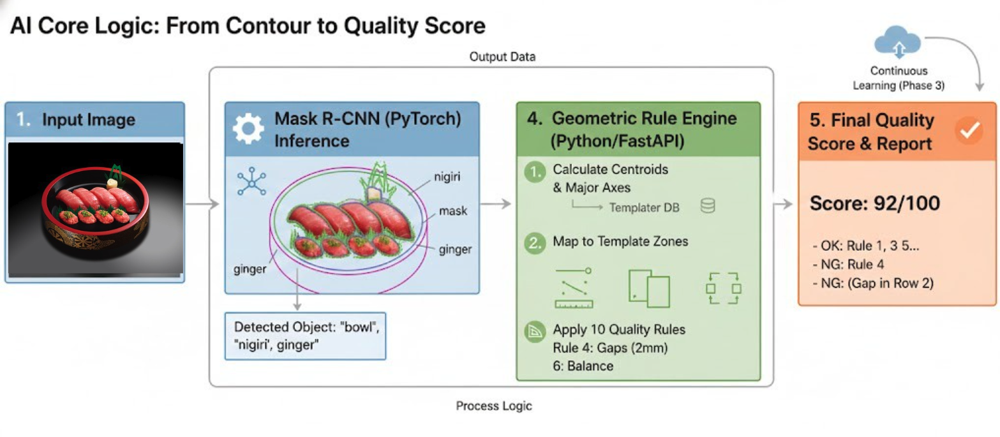
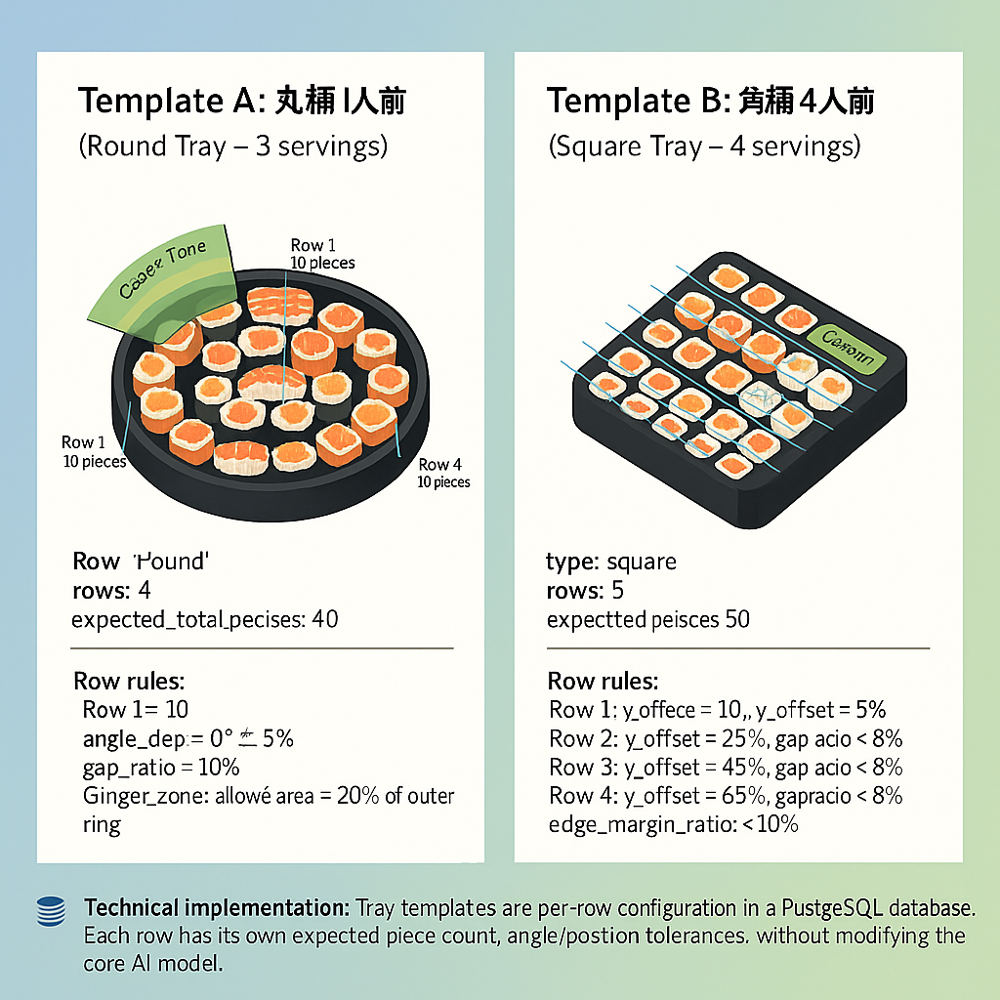
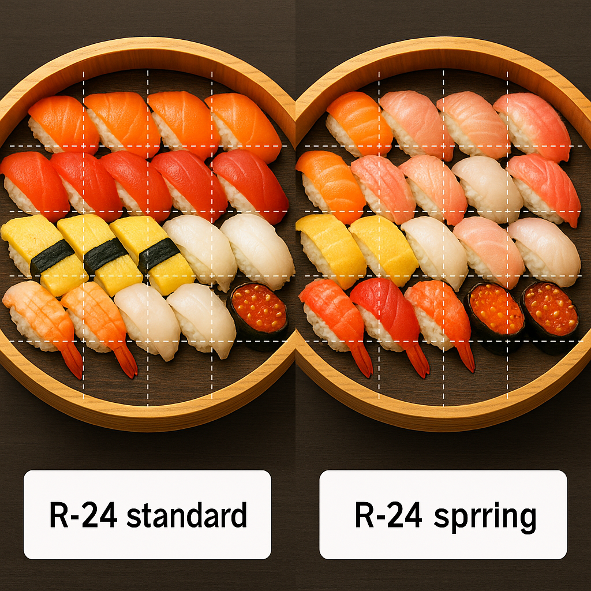
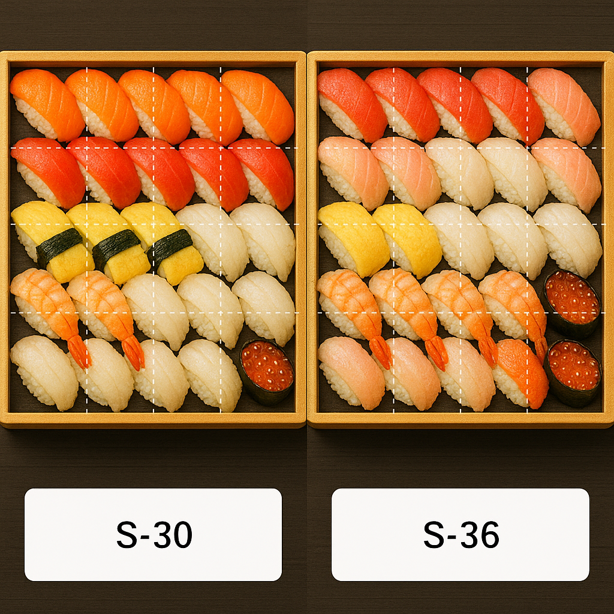

現行システムでは TensorFlow と旧来アーキテクチャを用い、寿司の種類（クラス）ごとに認識を行い得点付けをしています。このアプローチには以下の課題があります。
本提案書の主な目的は以下の通りです。
本案件のポイントは、以下の2つのバランスをどのように取るかです。
検討の過程で、以下のような選択肢を比較しました。
そこで、本提案では次のような方針を取ります。
このように、最初の1ヶ月で YOLO11-seg の可能性を最大限試したうえで、 必要に応じて Mask R-CNN へ切り替える構成とすることで、速度と精度の両面から最適なアーキテクチャを選択できるようにします。
ページ上部へ戻る新アーキテクチャにおける基本フローは以下の通りです。

桶テンプレート（Box Template） は、桶ごとのマスタ設定です。 評価ロジックをコード側にハードコーディングするのではなく、次のように役割分担します。
各桶ごとのテンプレートには、主に以下の情報を保持します。
テンプレート適用時のフローは以下の通りです。



1枚の画像に対する基本的な評価フローは次の通りです。
従来のように寿司を細かいクラスごとに識別するのではなく、フェーズ1では以下にフォーカスします。
TRAY：桶／トレー本体の輪郭SUSHI_MAIN：一般的な握り寿司（ネタは問わない）SUSHI_MAKI：巻き寿司（細巻き・太巻きなど）SUSHI_GUNKAN：軍艦巻きSIDE_GINGER：ガリSIDE_OTHER：その他の付け合わせ（大葉、レモン、山葵 等）これにより、「20種類以上のネタをそれぞれクラス分けして学習する」方式から、 「レイアウト評価に必要な観点だけをクラスに切り出す」方式に切り替えることができます。
これにより、ネタのクラスIDに強く依存せずに、現行に近い、あるいはそれ以上の評価を実現することを目指します。
現行ルール： 「まち・しめさばのみ、皮目が左に向いていること」 このルールは特定のネタを高精度に識別する必要があり、新しい桶・新しいネタへの拡張を阻害する要因となります。
フェーズ1の提案：
POST /api/v1/sushi/score
（画像アップロード → スコア・OK/NG・減点理由を含む JSON を返却）。フェーズ1では、ネタごとの細かい種類（マグロ・サーモン等）ではなく、 盛り付け評価に必要な6種類のクラスに集約して学習・推論を行います。
Mask R-CNN は画像からこれら6クラスをインスタンス単位で検出し、 各インスタンスの輪郭・重心・面積・向きなどの幾何情報を出力します。 ルールエンジン側では、この幾何情報と桶テンプレート（Row・ゾーン・期待個数）の情報を組み合わせて採点を行います。
現行の10ルールと同等レベルのチェックを、テンプレート方式＋6クラスで再定義します。 それぞれのルールは 0〜10 点のスコアを持ち、合計 100 点からの減点方式（または加点方式）で総合点を算出します。
| ルール | 評価観点（テンプレートとクラスの利用イメージ） | 主に利用するクラス |
|---|---|---|
| Rule 1：総貫数 | テンプレートに定義された expected_total_pieces と、 SUSHI_MAIN / SUSHI_MAKI / SUSHI_GUNKAN の検出数を比較。 差が0なら満点、差が1〜2貫なら減点、小さすぎ／多すぎの場合は大きく減点。 | SUSHI_MAIN, SUSHI_MAKI, SUSHI_GUNKAN |
| Rule 2：行ごとの貫数 | 桶テンプレート上の各 Row に対して「期待貫数」を定義。 各寿司ピースの重心をテンプレート座標にマッピングし、Rowごとに個数をカウント。 行ごとの個数がテンプレートと一致していれば満点、±1貫で減点。 | SUSHI_MAIN, SUSHI_MAKI, SUSHI_GUNKAN, TRAY |
| Rule 3：行の直線性・平行性 | Rowごとに寿司の重心を直線フィッティングし、 直線の角度と残差（どれだけ直線からズレているか）を算出。 テンプレートの行角度（row_angle_deg）とのズレが許容範囲内なら満点。 | SUSHI_MAIN, SUSHI_MAKI, SUSHI_GUNKAN |
| Rule 4：行間の間隔 | 上下の Row の中心線の距離を比較し、 テンプレートに定義された row_gap_px_ratio と比べてバラつきが小さければ満点。 行間が詰まりすぎ／空きすぎの場合は減点。 | SUSHI_MAIN, SUSHI_MAKI, SUSHI_GUNKAN, TRAY |
| Rule 5：桶の縁とのマージン | 各寿司ピースの重心から桶の縁（TRAY マスク）までの距離を計測。 edge_margin_ratio（「桶の内側何％以内」など）の範囲に収まっていれば満点。 縁に近すぎる／中央に寄りすぎる行には減点。 | SUSHI_MAIN, SUSHI_MAKI, SUSHI_GUNKAN, TRAY |
| Rule 6：ガリゾーン | テンプレート上で「Ginger Zone」を定義し、 そこに SIDE_GINGER が1〜数個だけ存在するかを確認。 ゾーン外にガリがある、またはまったく無い場合は減点。 | SIDE_GINGER, TRAY |
| Rule 7：巻き物／軍艦の配置 | 一部のテンプレートでは、SUSHI_MAKI / SUSHI_GUNKAN を 特定の Row またはゾーンにまとめて配置するルールを定義。 テンプレートのゾーン内に所定数があるか、他のゾーンに散らばっていないかをチェック。 | SUSHI_MAKI, SUSHI_GUNKAN, TRAY |
| Rule 8：左右・上下バランス | TRAY の中心線で上下／左右に分割し、各側の寿司ピース数・面積の合計を比較。 上下／左右のバランスがテンプレート比 ±○％以内なら満点。 | SUSHI_MAIN, SUSHI_MAKI, SUSHI_GUNKAN, TRAY |
| Rule 9：重なり・異常配置 | 寿司どうしのマスクの重なり具合（IoU）を確認し、 極端な重なりや、SIDE_OTHER / SUSHI_* がテンプレート外に大きくはみ出していないかをチェック。 異常なオーバーラップや飛び出しがある場合に減点。 | SUSHI_MAIN, SUSHI_MAKI, SUSHI_GUNKAN, SIDE_OTHER, TRAY |
| Rule 10：空白・欠け | テンプレート上で寿司が入るべきゾーンに大きな空白領域がないかを確認。 連続した空白ゾーンがある場合や、Row中央に穴が空いている場合には減点。 | SUSHI_MAIN, SUSHI_MAKI, SUSHI_GUNKAN, TRAY |
スコアリングのイメージ：
フェーズ1では、AI部分とアプリケーション部分を明確に分離します。
フェーズ1（2,000時間）を前提とした対応範囲のイメージは以下の通りです。
実際にどの桶・どのレイアウトをフェーズ1の対象とするかは、要件定義フェーズで御社とすり合わせさせていただきます。
新たな桶・ネタを追加した際に、評価の安定性を保つための考え方は以下の通りです。
初期モデル構築の流れ：
課題定義 → データ収集 → データアノテーション → データセット分割（train/val/test） → モデル選定（YOLO11-seg / Mask R-CNN） → 学習 → 評価・検証 → モデル出力 → AIコアロジック構築 → デプロイ
初期段階では、人手によるチェックを含めた「管理された継続学習」を想定します。
管理者 → 画像アップロード → アノテーションツール（例：EC2上で運用）でラベリング → S3 にデータセットとして保存 → YOLO11-seg / Mask R-CNN で再学習 → 新モデル → 評価後にAIモデルとして反映
推論フロー：
ユーザー → 画像アップロード → AIモデル（YOLO11-seg / Mask R-CNN + ルールエンジン） → 評価結果を返却
フェーズ1をスムーズに進めるため、主に以下のご準備をお願いしたく存じます。
フェーズ1の総工数見積りは 2,000時間（フェーズ2・フェーズ3は別途）を想定しています。
開発単価：2,500円 / 時間
フェーズ1開発費用（概算）：
フェーズ1は、合計工数 2,000時間 を想定し、約 6ヶ月 の期間で進行するイメージです。
特に 最初の1ヶ月は YOLO11-seg のPoC期間 とし、YOLO でルール評価に必要な精度が出るかを検証します。
PoCの結果に応じて、YOLOベースで進めるか、Mask R-CNN ベースで進めるかを決定しますが、
いずれの場合も PoC で実施したデータ収集・アノテーション・評価設計はそのまま流用できるため、
フェーズ1全体の工数（2,000時間）は変わりません。
| 期間（目安） | ステップ | 主な内容 |
|---|---|---|
| Month 1 | PoC準備 ＋ YOLO11-seg PoC |
・対象桶（丸／角、人数別）の確定 ・10ルールの必須／後回しルールの切り分け ・6クラス（TRAY, SUSHI_MAIN, SUSHI_MAKI, SUSHI_GUNKAN, SIDE_GINGER, SIDE_OTHER）の最終定義 ・PoC用データセット方針の決定（画像枚数・条件など） ・一部データに対してアノテーション実施 ・YOLO11-seg による学習・推論パイプライン構築 ・行単位・ゾーン単位のカウント精度、マスク品質の評価 ・PoC結果レビュー： └ 条件を満たす場合：YOLO ベースでフェーズ1継続 └ 条件を満たさない場合：Mask R-CNN を正式アーキテクチャとして採用 |
| Month 2 | モデル方針確定 ＋ データ設計 |
・採用モデル（YOLO or Mask R-CNN）の確定 ・本番用データセット設計（train/val/test の構成） ・桶ごと・クラスごとの必要画像枚数の整理 ・アノテーションガイドライン確定（マスク粒度・ラベルルール 等） ・アノテーション体制の立ち上げ |
| Month 3 | データ拡充 ＋ 本番モデル学習 |
・対象桶に対する学習用画像の収集・アノテーション実施 ・採用モデル（YOLO / Mask R-CNN）での本番学習 ・6クラスごとの検出精度・マスク品質チューニング ・桶別・テンプレート別の精度レポート作成 |
| Month 4 | ルールエンジン ＋ 桶テンプレート実装 |
・桶テンプレート用データ構造の実装（行数・ゾーン・期待個数 等） ・10個の評価ルール（4.3.2 参照）の実装 ・AI出力（マスク）とのマッピングロジック実装（行ごとのカウント・ギャップ計算 等） ・テンプレート管理用の簡易画面／ツール実装 ・代表的なテンプレート（丸桶／角桶）での試験運用 |
| Month 5 | API連携 ＋ 統合テスト |
・既存バックエンド／モバイルアプリとのAPI連携（画像アップロード〜スコア返却） ・実機端末＋現場に近い撮影条件での総合テスト ・テンプレート別・ルール別のスコア分布を確認し、しきい値を調整 ・ログ／モニタリング項目の実装（レイテンシ・エラー率 等） |
| Month 6 | 調整 ＋ ドキュメント化 ＋ リリース準備 |
・本番運用を想定した各種パラメータ・テンプレートの微調整 ・運用マニュアル、テンプレート追加手順、再学習手順のドキュメント化 ・PoC〜本番モデルまでの結果を整理した最終レポート作成 ・ステークホルダー向け最終デモ／レビュー ・フェーズ2（パフォーマンス改善）に向けた要件整理 |
上記スケジュールは標準的な目安であり、実際の開始時期や対象桶の数、
既存アノテーションデータの再利用状況により、月単位で前後する可能性があります。
キックオフ時に御社と詳細スケジュールをすり合わせた上で確定させていただきます。
フェーズ1で精度・ルール・対象桶が安定して運用できることを確認した上で、フェーズ2では以下を目標とします。
パフォーマンス最適化のため、モニタリング基盤を整備し、以下の指標を取得します。
これらの指標をもとに、モデル構成・サーバ構成・画像サイズ等の組み合わせを試験し、コストとスピードのバランスが最も良い構成を選定します。
KD と AIサーバ間の API インターフェースは以下を想定します。
継続学習の推奨フロー：
自動化レベルについて：
AIおよびアプリケーション開発単価： 2,500円 / 時間
アノテーション（データラベリング）単価： 2,000円 / 時間
| 項目 | 想定工数 | 単価（円/時間） | 概算費用（円） |
|---|---|---|---|
| フェーズ1 – AIコア & アプリケーション開発 | 2,000h | 2,500円 | 5,000,000円 |
| 画像アノテーション作業 | 例：500h | 2,000円 | 1,000,000円 |
| フェーズ2・フェーズ3 | （別途詳細見積り） | - | - |
| 合計（フェーズ1 + アノテーション例） | - | - | 約 6,000,000円（税・インフラ費別） |
実際のアノテーション時間と費用は、旧アノテーションデータの再利用可否、再ラベリングが必要な画像枚数、およびマスク／ラベルの粒度によって変動します。
ページ上部へ戻る現行システム（TensorFlow ベース）は、高スペック構成で運用されており、サーバ費用として月額40〜50万円程度が発生している状況と理解しております。
新アーキテクチャ（YOLO11-seg / Mask R-CNN + PyTorch）では、最適化次第でリソース効率の改善が見込めますが、安定した推論のためには一定レベルのサーバ性能が必要となります。
詳細なお見積りでは、「Low / Standard / High」など複数構成案をご提示し、月額目安とあわせて比較検討いただけるようにいたします。
ページ上部へ戻る本プロジェクトは、次の3フェーズでの実行を想定しています。